Associate Professor
Department of Computer Science and Engineering
Seoul National University (SNU)
Email: hbjoo-at-snu-ac-kr
Office: Rm 324 Bldg 302
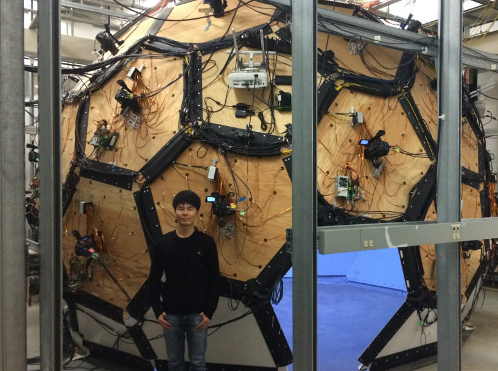
I am an associate professor at Seoul National University (SNU) in the Department of Computer Science and Engineering. Before joining SNU, I was a Research Scientist at Facebook AI Research (FAIR), Menlo Park. I finished my Ph.D. in the Robotics Institute at Carnegie Mellon University, where I worked with Yaser Sheikh. During my PhD, I interned at Facebook Reality Labs, Pittsburgh (Summer and Fall, 2017) and Disney Research Zurich (Summer, 2015). I received my M.S. in EE and B.S. in CS at KAIST, Korea. I am a recipient of the Samsung Scholarship and the CVPR Best Student Paper Award in 2018.
The goal of my research is to endow machines and robots with the ability to perceive and understand human behaviors in 3D. Ultimately, I dream to build an AI system that can behave like humans in new environments and can interact with humans using a broad channel of nonverbal signals (kinesic signals or body languages). I pursue this direction by creating new tools in computer vision, machine learning, and computer graphics.
- Apr 2026The code of our Dexterous World Models paper is available: Link
- Apr 2026My student Hyunsoo Cha will be starting an internship at NVIDIA Research. Congrats!
- Mar 2026I will be giving talks in CVPR 2026 workshops: Agents in Interaction, from Humans to Robots, 4D Digital Twins
- Feb 2026Two papers got accepted in CVPR 2026
- Jan 2026Two papers got accepted in ICLR 2026
- Oct 2025I was awarded the Okawa Research Grant
- Aug 2025I will serve as an area chair for ICLR 2026, 3DV2026, and as a lead area chair for CVPR 2026 and ECCV 2026
- Aug 2025I gave talks in Arirang TV: The Evolution of AI and AI: Reading Humans
- Jul 2025I will be giving a talk in CORL 2025 workshop: Human to Robot (H2R)
- Jun 2025I am co-organizing a RSS workshop on Dexterous Manipulation: Learning and Control with Diverse Data
- May 2025I will be giving talks in CVPR 2025 workshops: Global 3D Human Poses Workshop, 3D Humans Workshop, and Agents in Interactions, from Humans to Robots
- Mar 2025I will be giving a talk in an ICRA workshop: From Computer Vision-based Motion Tracking to Wearable Assistive Robot Control
- Jan 2025I will serve as an area chair for CVPR 2025, ICCV 2025, and NeurIPS 2025
 |
|
 |
|
 |
|
 |
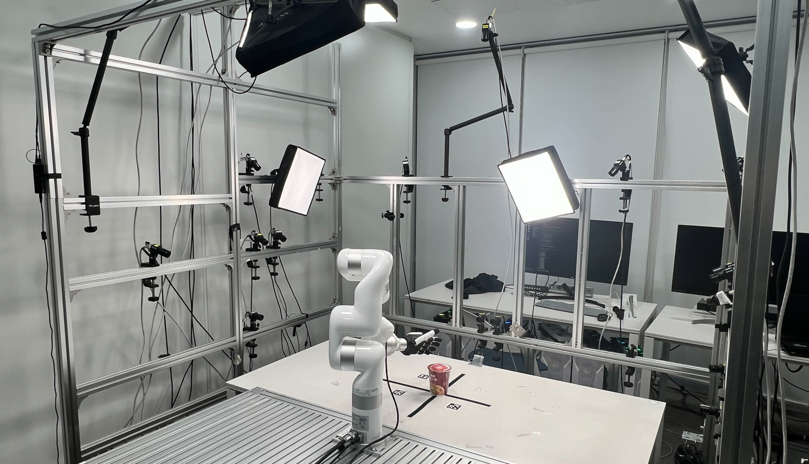 |
SNU ParaDex: Capturing Dexterous Robot Hand Manipulation |
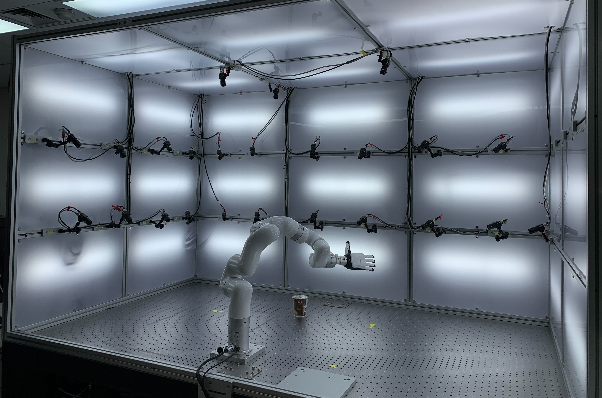 |
SNU ParaDex2 |
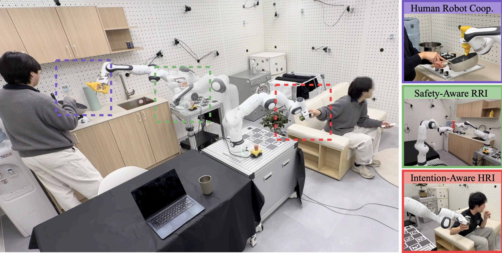 |
SNU RobotHome: Capturing Human-Robot Interactions in A Home Setting |
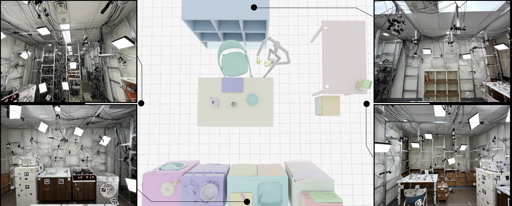 |
* indicates equal contributions
-
HRDexDB: A Large-Scale Dataset of Dexterous Human and Robotic Hand GraspsPreprint 2026
-
 Text-Guided 6D Object Pose Rearrangement via Closed-Loop VLM AgentsPreprint 2026
Text-Guided 6D Object Pose Rearrangement via Closed-Loop VLM AgentsPreprint 2026 -
-
Vanast: Virtual Try-On with Human Image Animation via Synthetic Triplet SupervisionCVPR 2026 Highlight
-
Durian: Dual Reference Image-Guided Portrait Animation with Attribute TransferICLR 2026
-
-
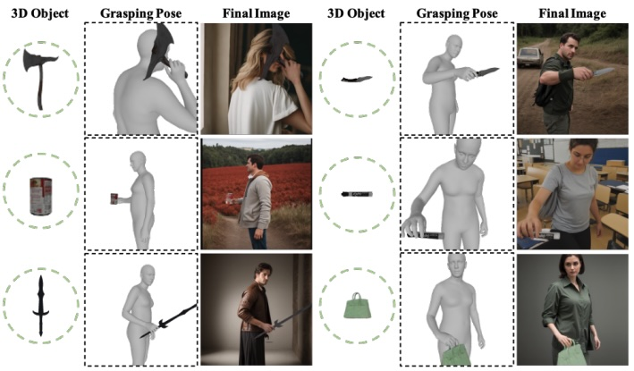
GraspDiffusion: Synthesizing Realistic Whole-body Hand-Object InteractionWACV 2026 -
OmniEgoCap: Device-Agnostic Sequence-Level Egocentric Motion ReconstructionPreprint 2025
-
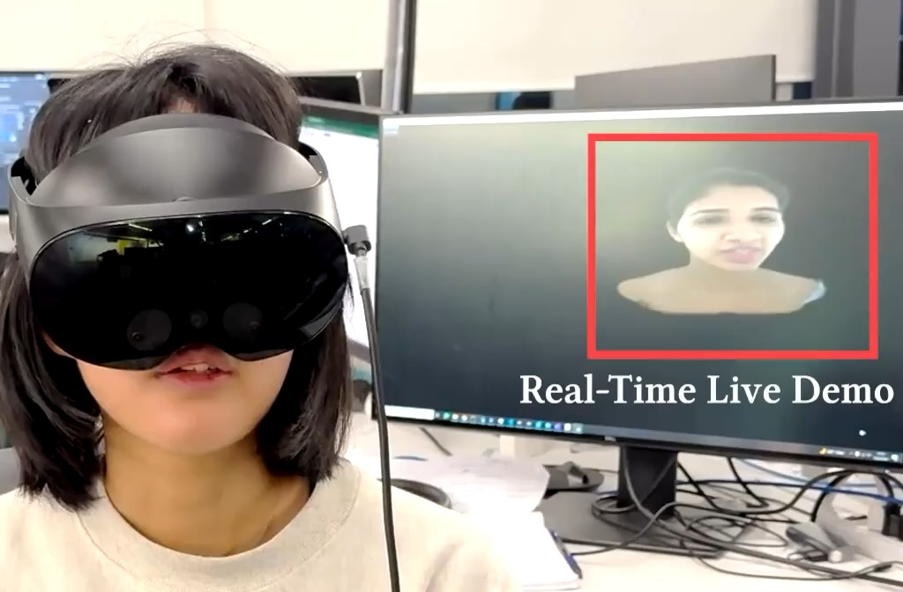
Audio Driven Real-Time Facial Animation for Social TelepresenceSIGGRAPH Asia 2025 -
 Learning to Generate Human-Human-Object Interactions from Textual DescriptionsNeurIPS 2025
Learning to Generate Human-Human-Object Interactions from Textual DescriptionsNeurIPS 2025 -
 DAViD: Modeling Dynamic Affordance of 3D Objects using Pre-trained Video Diffusion ModelsICCV 2025
DAViD: Modeling Dynamic Affordance of 3D Objects using Pre-trained Video Diffusion ModelsICCV 2025 -
 Learning 3D Object Spatial Relationships from Pre-trained 2D Diffusion ModelsICCV 2025
Learning 3D Object Spatial Relationships from Pre-trained 2D Diffusion ModelsICCV 2025 -
HairCUP: Hair Compositional Universal Prior for 3D Gaussian AvatarsICCV 2025 Oral presentation
-
ParaHome: Parameterizing Everyday Home Activities Towards 3D Generative Modeling of Human-Object InteractionsCVPR 2025
-
-
 Learning to Transfer Human Hand Skills for Robot ManipulationsCORL X-Embodiment Workshop 2024
Learning to Transfer Human Hand Skills for Robot ManipulationsCORL X-Embodiment Workshop 2024 -
 Beyond the Contact: Discovering Comprehensive Affordance for 3D Objects from Pre-trained 2D Diffusion ModelsECCV 2024 Oral presentation — 200/8585 = 2.3%
Beyond the Contact: Discovering Comprehensive Affordance for 3D Objects from Pre-trained 2D Diffusion ModelsECCV 2024 Oral presentation — 200/8585 = 2.3% -
 Guess The Unseen: Dynamic 3D Scene Reconstruction from Partial 2D GlimpsesCVPR 2024
Guess The Unseen: Dynamic 3D Scene Reconstruction from Partial 2D GlimpsesCVPR 2024 -
 PEGASUS: Personalized Generative 3D Avatars with Composable AttributesCVPR 2024
PEGASUS: Personalized Generative 3D Avatars with Composable AttributesCVPR 2024 -

-
 Mocap Everyone Everywhere: Lightweight Motion Capture With Smartwatches and a Head-Mounted CameraCVPR 2024
Mocap Everyone Everywhere: Lightweight Motion Capture With Smartwatches and a Head-Mounted CameraCVPR 2024 -
 CHORUS: Learning Canonicalized 3D Human-Object Spatial Relations from Unbounded Synthesized ImagesICCV 2023 Oral presentation — 152/8260 = 1.8%
CHORUS: Learning Canonicalized 3D Human-Object Spatial Relations from Unbounded Synthesized ImagesICCV 2023 Oral presentation — 152/8260 = 1.8% -
 Chupa: Carving 3D Clothed Humans from Skinned Shape Priors using 2D Diffusion Probabilistic ModelsICCV 2023 Oral presentation — 152/8260 = 1.8%
Chupa: Carving 3D Clothed Humans from Skinned Shape Priors using 2D Diffusion Probabilistic ModelsICCV 2023 Oral presentation — 152/8260 = 1.8% -
 NCHO: Unsupervised Learning for Neural 3D Composition of Humans and ObjectsICCV 2023
NCHO: Unsupervised Learning for Neural 3D Composition of Humans and ObjectsICCV 2023 -
 Locomotion-Action-Manipulation: Synthesizing Human-Scene Interactions in Complex 3D EnvironmentsICCV 2023
Locomotion-Action-Manipulation: Synthesizing Human-Scene Interactions in Complex 3D EnvironmentsICCV 2023 -
 BANMo: Building Animatable 3D Neural Models from Many Casual VideosCVPR 2022 Oral presentation — 344/8161 = 4.2%
BANMo: Building Animatable 3D Neural Models from Many Casual VideosCVPR 2022 Oral presentation — 344/8161 = 4.2% -
 Ego4D: Around the World in 3,000 Hours of Egocentric VideoCVPR 2022 Oral presentation — 344/8161 = 4.2%Best Paper Award Finalist
Ego4D: Around the World in 3,000 Hours of Egocentric VideoCVPR 2022 Oral presentation — 344/8161 = 4.2%Best Paper Award Finalist -
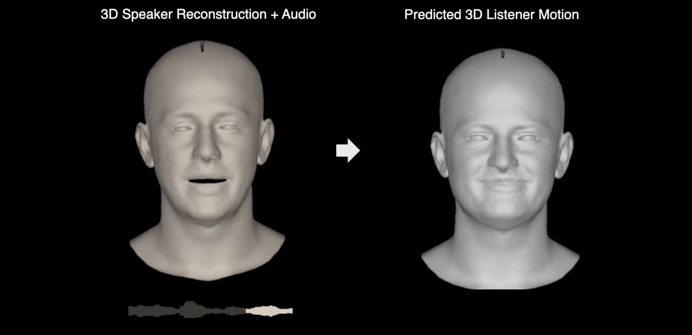
Learning to Listen: Modeling Non-Deterministic Dyadic Facial MotionCVPR 2022 -
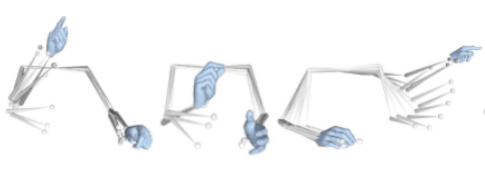
Body2Hands: Learning to Infer 3D Hands from Conversational Gesture Body DynamicsCVPR 2021 -
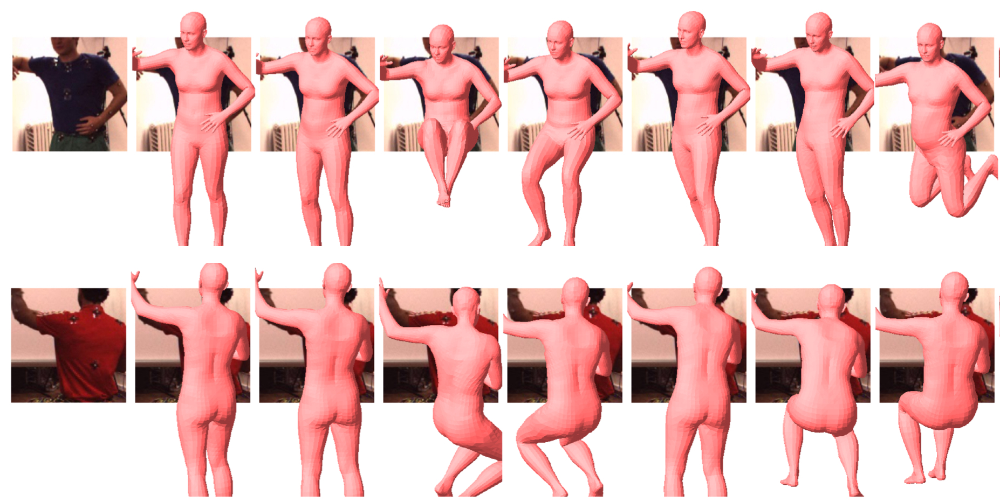
3D Multi-bodies: Fitting Sets of Plausible 3D Human Models to Ambiguous Image DataNeurIPS 2020 Spotlight -
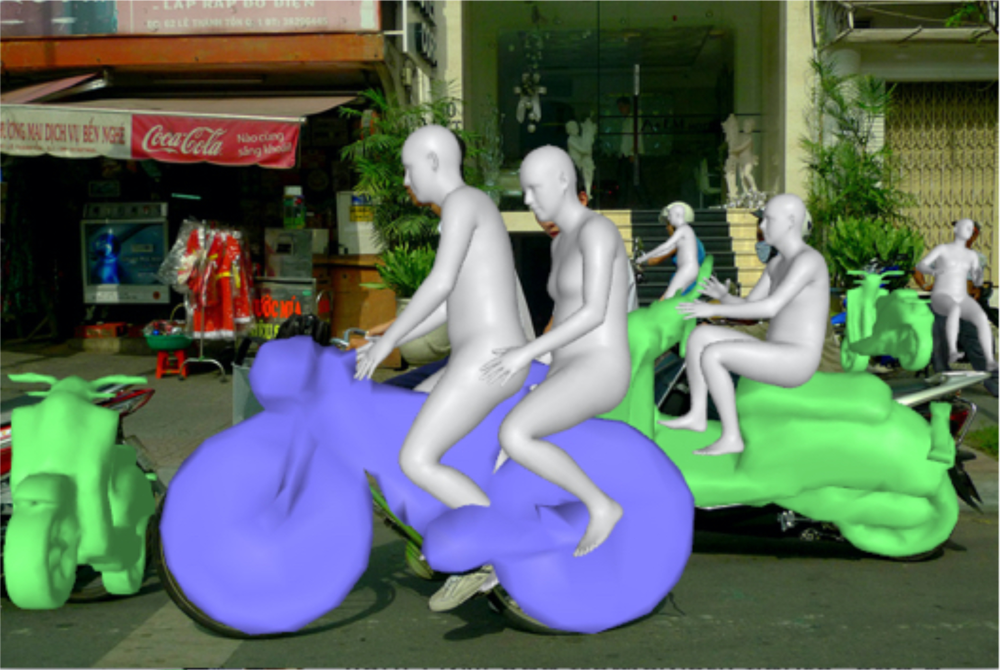
Perceiving 3D Human-Object Spatial Arrangements from a Single Image in the WildECCV 2020 -
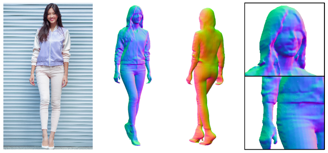
PIFuHD: Multi-Level Pixel-Aligned Implicit Function for High-Resolution 3D Human DigitizationCVPR 2020 Oral presentation — 335/6424 = 5.2% -
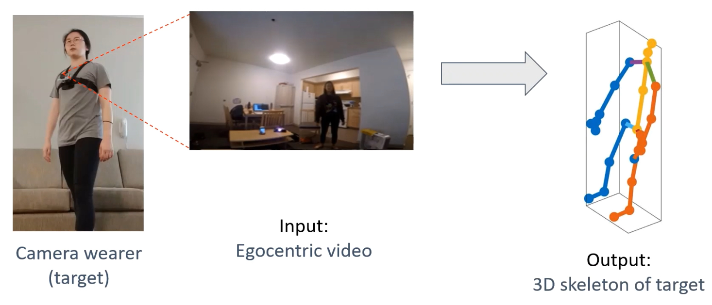
You2Me: Inferring Body Pose in Egocentric Video via First and Second Person InteractionsCVPR 2020 Oral presentation — 335/6424 = 5.2% -

-
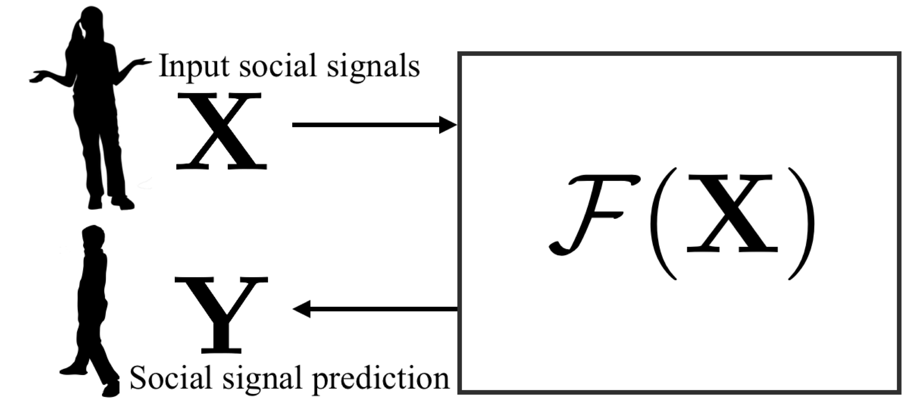
Towards Social Artificial Intelligence: Nonverbal Social Signal Prediction in A Triadic InteractionCVPR 2019 Oral presentation — 288/5165 = 5.5% -
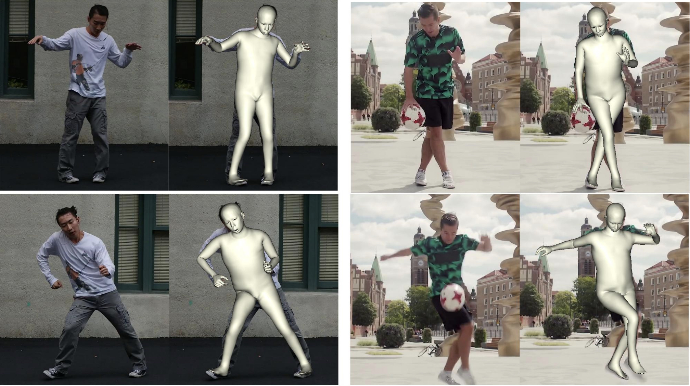
Monocular Total Capture: Posing Face, Body and Hands in the WildCVPR 2019 Oral presentation — 288/5165 = 5.5% -
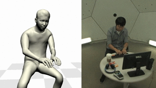
Total Capture: A 3D Deformation Model for Tracking Faces, Hands, and BodiesCVPR 2018 Oral presentation — 70/3359 = 2.0% -
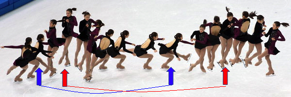
-
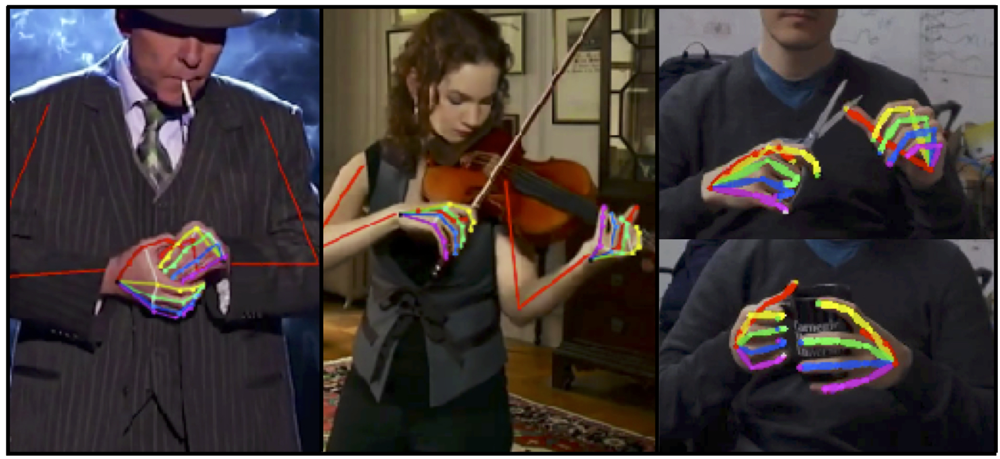
Hand Keypoint Detection in Single Images using Multiview BootstrappingCVPR 2017 -
 Panoptic Studio: A Massively Multiview System for Social Interaction CaptureTPAMI 2017 (Extended version of ICCV 2015)
Panoptic Studio: A Massively Multiview System for Social Interaction CaptureTPAMI 2017 (Extended version of ICCV 2015) -
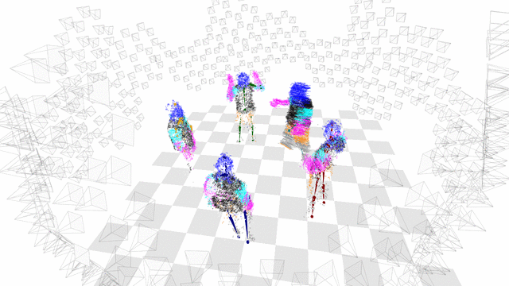
Panoptic Studio: A Massively Multiview System for Social Motion CaptureICCV 2015 Oral presentation — 56/1698 = 3.3%Press:


-
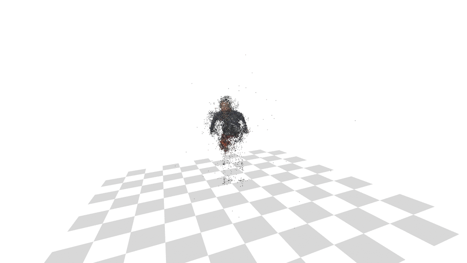
MAP Visibility Estimation for Large-Scale Dynamic 3D ReconstructionCVPR 2014 Oral presentation — 104/1807 = 5.8%Press:


-
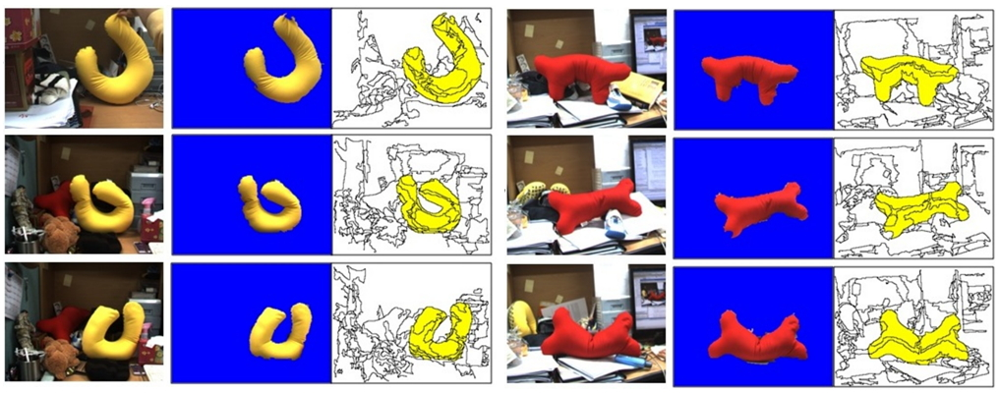
-

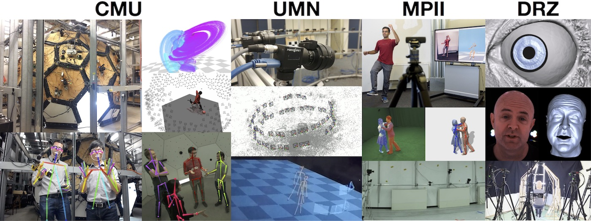


- Arirang TV, The Evolution of AI and AI: Reading Humans, 2025
- IEEE Spectrum, Robots Learn to Speak Body Language, 2017
- ZDNet, CMU researchers create a huge dome that can read body language, 2017
- TechCrunch, CMU researchers create a huge dome that can read body language, 2017
- BBC News, The dome which could help machines understand behaviour, 2017
- CMU News, Scientists put human interaction under the microscope, 2017
- SPIEGEL ONLINE (German), The panoptic Studio: Computer decipher the secrets of body language, 2015
- Co.DESIGN, Inside A Robot Eyeball, Science Will Decode Our Body Language, 2015
- WIRED (Italian), Panoptic Studio: The Latest Generation of Motion Capture, 2015
- Voice of America, New Studio Yields Most Detailed Motion Capture in 3D, 2015
- CNet, Tomorrow Daily: New video capture tech, 2014
- NBCNews, Camera-Studded Dome Tracks Your Every Move With Precision, 2014
- IEEE Spectrum, Camera-Filled Dome Recreates Full 3-D Motion Scenes, 2014
- Discovery News, Amazing 3-D Flicks from Dome of 500 Cameras?, 2014
- Gizmodo, A Dome Packed With 480 Cameras Captures Detailed 3D Images In Motion, 2014
- The Verge, Scientists build a real Panopticon that captures your every move in 3D, 2014
- ScienceDaily, Hundreds of videos used to reconstruct 3-D motion without markers, 2014
- Phys.org, Researchers combine hundreds of videos to reconstruct 3D motion without markers, 2014
- Engadget, Watch a dome full of cameras capture 3D motion in extreme detail, 2014
- PetaPixel, Researchers Use a 480-Camera Dome to More Accurately Capture 3D Motion, 2014
- Gizmag, Camera-studded dome used to reconstruct 3D motion, 2014
- The Register, Boffins fill a dome with 480 cameras for 3D motion capture, 2014
- The Engineer, 3D motion captured without markers, 2014
- Popular Photography, Carnegie Mellon Packs 480 Cameras In A Dome To Perfectly Track 3D Motion, 2014
- CMU News, Carnegie Mellon Combines Hundreds of Videos To Reconstruct 3D Motion Without Use of Markers, 2014